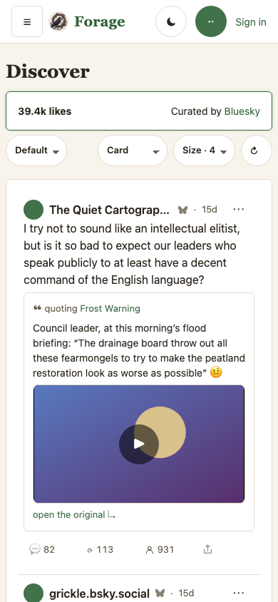
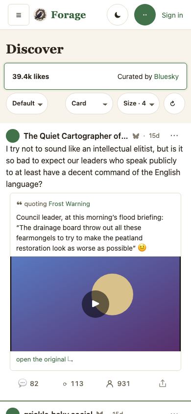
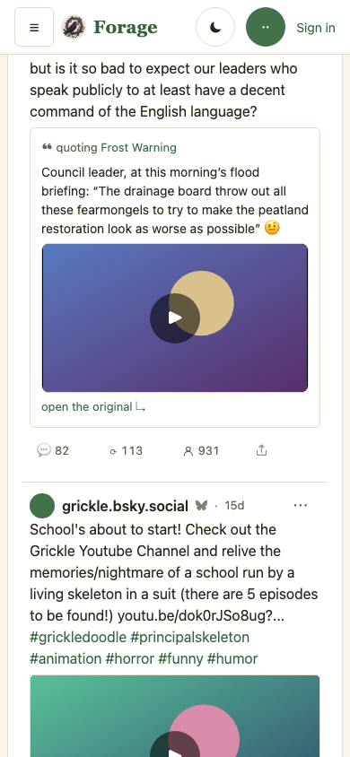
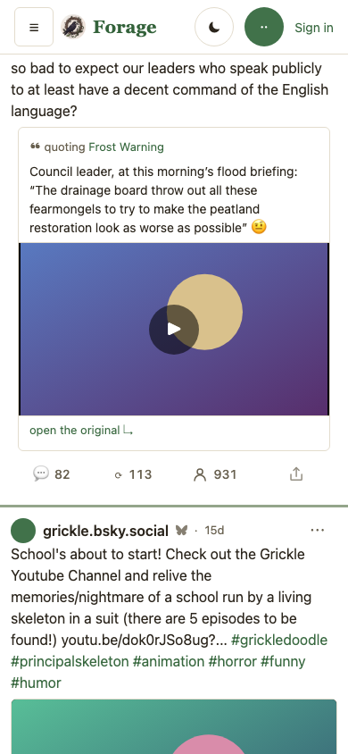
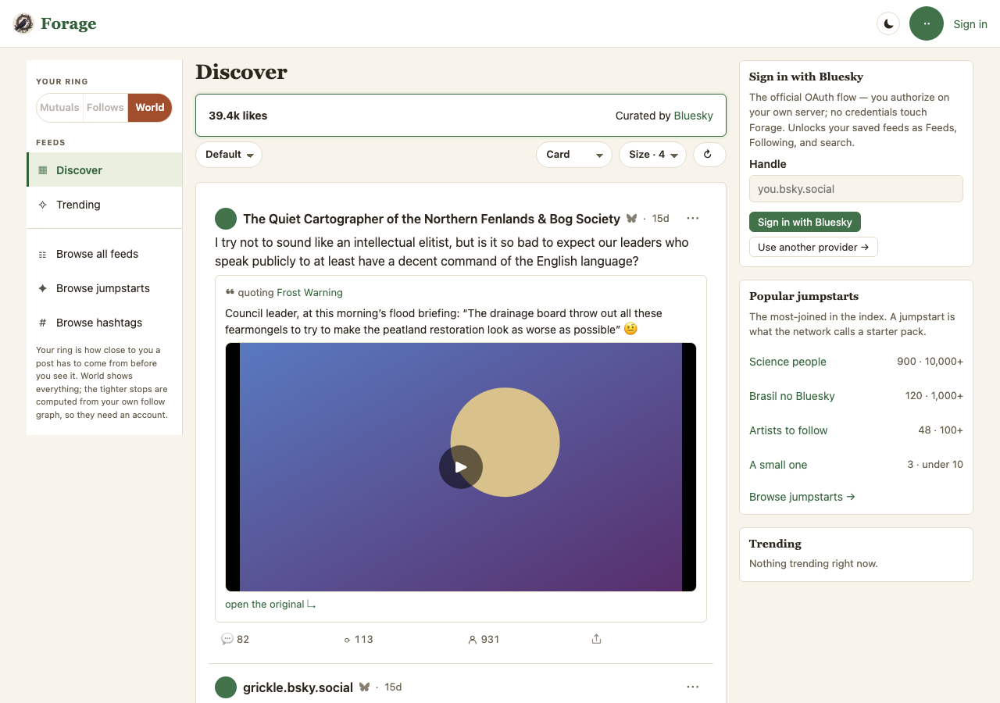

Forage — the phone feed: posts edge to edge, rows that read as rows
What this shows. The owner looked at the Samsung captures for board-cards 5c on 2026-09-14 and the finding was not about card size: "I don't like that the cards have the sidewall. When I look at Instagram or Facebook each post on mobile naturally takes up side to side for best visibility … that negative side space makes a poor use of space and less engaging … each post is not quite distinct enough from each other, the top and bottom separation is harder to read possibly bc they are tiles rather than full horizontal rows." Today at 390 wide the posts sit in one white tile (.card, 16px padding, 1px border, 6px corners) inside an 8px page gutter, with a second 8px inset on each row and an 8px-radius frame on the media — the text starts 46px from the screen edge, and a hairline is all that separates one post from the next. Proposed: the column meets the screen edge, the posts are one continuous stream, an active 3px rule drawn from the skin's own tokens separates one post from the next, the media runs the full width, and the four actions sit centred in equal cells, one step bigger. v2 after the owner's first look at v1 (2026-09-14): v1 separated rows with an 8px band of page ground — "the user is viewing the background as the horizontal line between posts … rather than posts seemingly floating free with background above and below, they are in a stream with an active theme separator" — and the action row read as left-packed and small: "centered a little bit better as 4 across and even slightly bigger and pronounced but consistent." Both are in v2. Every other card on the page (the feed header, the rail's cards when they fold in) keeps a gutter. The desktop column is untouched — its frames are here to prove it.
Open decisions
| # | Decision | Proposed | Not taken |
|---|---|---|---|
| 1 | What separates two posts | v2: one continuous stream, and between posts a 3px rule of the skin's brand tinted into its border (color-mix(in srgb, var(--brand) 45%, var(--border))) — thin, readable, and every skin draws its own line because both tokens are the skin's | v1's 8px band of page ground (owner: the posts read as floating and the background as the separator); a plain --border hairline (the "one long tile" reading the owner rejected first); a brand-solid rule (loud on the light skins, and it competes with the like's boost colour) |
| 2 | How far the media bleeds | To the screen edge on a top-level post (square corners, no side border). A picture inside a quoted post stays inside the quote card's frame — the quote is a card by design (feed-row v16) | Bleeding the quote's picture too: it would break the quote's own box, which is what tells a reader the words are someone else's |
| 3 | Text inset on a row | 12px (--s3) — the text starts at x=12 instead of x=46 | 8px: too tight against the screen edge for a 16px body face; 16px: spends width the owner asked back |
| 4 | The other cards | Keep an 8px gutter (the feed header card, the sign-in / rail cards when they fold into the column) — only the posts' card changes, scoped by .card:has(> .postrow) | Edge to edge for every card: the feed header would read as part of the feed; the sign-in card is a door, not a post |
| 6 | The action row (replies · reposts · like · share) | v2: the four controls centred in their equal cells ("4 across"), all at --t-sm 14px / weight 500 with a 6px glyph gap, svg glyphs 1.3em, the like arrow 1.15em — one size and weight for all four | Left-packed in the cells (v1 / today: each control starts at its cell's left edge, so the row reads as uneven on a full-width row); bigger still (16px) crowds a 390 row once counts reach four digits |
| 5 | Scope | ≤ 480px only. Desktop's 200 / 680 / 300 column (board-cards decision 6) is unchanged, and its frames below are identical | Tablet (481–860) unchanged in this mock; a follow-up decides whether the band pattern belongs there too |
A. The board on a phone — the top of the feed




What to read for. Where the text starts (12px vs 46px). Whether the rule between posts reads as a stream's seam rather than a gap or a hairline, and whether 3px in the brand tint is the right weight (decision 1). Whether the action row now reads as four even, readable controls (decision 6). Whether the picture at full width is what you meant by side to side. The quote card in the first post keeps its frame on purpose (decision 2).
Desktop is unchanged — the same two routes at 1280


Mapping to code
One block in css/app.css, inside the existing @media (max-width: 480px) rule that already sets the shell's phone padding. Nothing in JS; no skin file changes (a skin restyles, never restructures — docs/SKINS.md).
.shell { padding: var(--s2) 0; } /* was var(--s2): the column meets the edge */
.main > div > .row { padding-inline: var(--s3); } /* the page title row keeps its inset */
.main .card:not(:has(> .postrow)) { margin-inline: var(--s2); } /* every other card keeps a gutter */
.card:has(> .postrow) { background: transparent; border: 0; border-radius: 0; padding: 0; }
.card:has(> .postrow) > .postrow { background: var(--card); padding: var(--s3); border-bottom: 0; }
.card:has(> .postrow) > .postrow + .postrow { margin-top: 0; /* the stream's seam */
border-top: 3px solid color-mix(in srgb, var(--brand) 45%, var(--border)); }
.card:has(> .postrow) > .postrow .stage { margin-inline: calc(-1 * var(--s3)); width: auto;
border-radius: 0; border-left: 0; border-right: 0; } /* the bleed */
.card:has(> .postrow) > .postrow .actions { justify-items: stretch; } /* four across */
.card:has(> .postrow) > .postrow .actions > .cbtn,
.card:has(> .postrow) > .postrow .actions > .vote { justify-content: center; font-size: var(--t-sm); font-weight: 500; gap: 6px; }
.card:has(> .postrow) > .postrow .actions .glyph { width: 1.3em; height: 1.3em; }
.card:has(> .postrow) > .postrow .actions .arrow { font-size: 1.15em; }
If approved: this lands as a board-cards plan revision (Phase 8: the phone row) with a workflow that holds the frame's claims — the row's left edge at x=0, the text at 12px, the band at 8px, the stage at the viewport's width, the desktop column unmoved — and the 5c/7 device lines close with the owner's words. Still owed after this: the tablet range (decision 5), and a look on the Samsung once it ships, since these frames are Chromium at 390 and the owner's finding came from the phone.